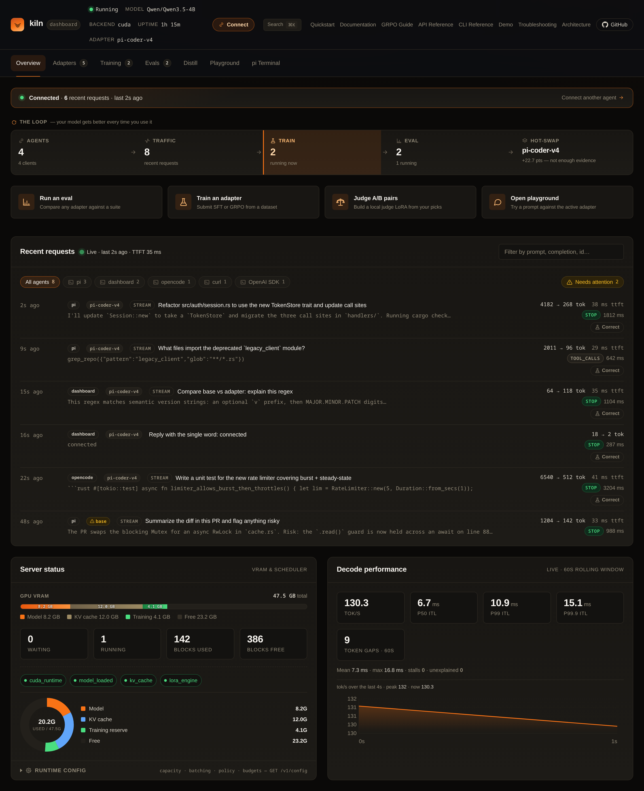
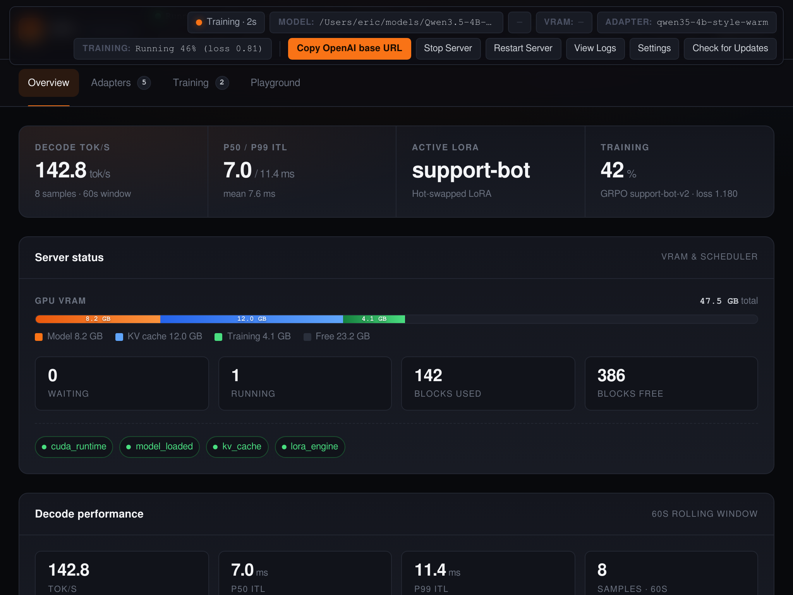

OpenAI-compatible inference
/v1/chat/completions, /v1/completions,
/v1/embeddings, streaming, function calling. Point any OpenAI
client at localhost:8420 and you're done.
Kiln is a pure-Rust, single-GPU inference server with live LoRA training built in. Drop-in OpenAI API. Hot-swap adapters. SFT and GRPO over HTTP. Tuned for Qwen3.5-4B on a single NVIDIA RTX A6000.
Qwen3.5-4B · 512 → 128 tokens · A6000 sm_86 · KILN_W4A16=1, CUDA graphs on · median-of-3, range Δ 1.8%. See full benchmarks →
Most servers stop at autoregressive decode. Kiln keeps going. Same process serves traffic, trains a LoRA adapter on your scoring signal, and hot-swaps it into production — without ever dropping a request.
/v1/chat/completions, /v1/completions,
/v1/embeddings, streaming, function calling. Point any OpenAI
client at localhost:8420 and you're done.
POST a batch of rollouts and rewards to /v1/train/grpo. The trainer
shares VRAM with the model, computes the policy update, and hot-swaps the
new adapter on the next forward pass.
Pure-Rust workspace, no Python runtime, no Docker required. CUDA on Linux, Metal on Apple Silicon, Vulkan elsewhere. Boots in seconds and stays under ~10 GB on A6000.
Generate rollouts. Score them with whatever reward function you have lying around. POST them back. The model that serves your next request is the one that just learned.
# Drop-in OpenAI client. Same endpoint, same model.
from openai import OpenAI
import requests, json
client = OpenAI(base_url="http://localhost:8420/v1", api_key="local")
# 1. Generate N rollouts on the same prompt.
prompt = "Write a short, friendly email reply."
rollouts = [client.chat.completions.create(
model="Qwen/Qwen3.5-4B",
messages=[{"role": "user", "content": prompt}],
temperature=1.0, n=1).choices[0].message.content
for _ in range(8)]
# 2. Score with whatever reward you want.
rewards = [score(prompt, r) for r in rollouts]
# 3. Send the batch back. Adapter is live on the next request.
requests.post("http://localhost:8420/v1/train/grpo", json={
"adapter": "helpful-v3",
"prompt": prompt,
"completions": rollouts,
"rewards": rewards,
"learning_rate": 1e-4,
})Standard OpenAI completions. Use any client — the kiln server doesn't care if it's Python, TypeScript, or curl.
Reward is your code, not a config. A regex, a classifier, a human, an evaluator LLM, a unit test result. Whatever signal you have.
One HTTP call. The trainer runs in-process, computes the GRPO update, swaps the adapter without reloading the base model. Typical end-to-end: a few seconds.
Every kiln server ships an embedded dashboard. There's also a Tauri desktop app for the same workflows offline.

localhost:8420 for a
full dashboard — live requests, training jobs, adapters, logs. No extra
install.

Kiln targets Qwen3.5-4B specifically. The scheduler, paged KV cache, kernels, and quantization are all chosen for its hybrid 24×GDN + 8×GQA layout.
Sarathi-style chunked prefill. Decode requests merge into a running batch without head-of-line blocking.
Block-allocated KV pages with a prefix cache that re-uses tokens across calls. Multi-tenant by default.
MLP projections quantized to 4-bit weights with bf16 activations. Vendored Marlin GEMM, fused RMSNorm + GDN gates.
Adapters live alongside the base weights. Applied per request. Switch policies in milliseconds, no reload.
In-process trainer with gradient checkpointing. Your reward, your data, served by the same binary that serves traffic.
KILN_KV_CACHE_FP8=1 doubles effective context with no measurable quality loss on Qwen3.5-4B.
CUDA on Ampere/Ada/Hopper. Metal on Apple Silicon (M-series). Vulkan elsewhere. One source tree.
11-crate workspace. No Python at runtime. cargo build --release --features cuda and you have a server.
Pre-built releases for Linux+CUDA, Linux+Vulkan, and Apple Silicon. Full quickstart →
KILN_VERSION=$(curl -fsSL https://api.github.com/repos/ericflo/kiln/releases/latest \
| sed -n 's/.*"tag_name": "kiln-v\([^"]*\)".*/\1/p')
curl -fsSLO "https://github.com/ericflo/kiln/releases/download/kiln-v${KILN_VERSION}/kiln-${KILN_VERSION}-x86_64-unknown-linux-gnu-cuda124.tar.gz"
tar xf "kiln-${KILN_VERSION}-x86_64-unknown-linux-gnu-cuda124.tar.gz"
./kiln-${KILN_VERSION}-x86_64-unknown-linux-gnu-cuda124/kiln serve --model Qwen/Qwen3.5-4BPrefer a GUI? Download Kiln Desktop for macOS, Windows, or Linux.
/v1/chat/completions
OpenAI chat with streaming, tools, structured outputs.
/v1/completions
Classic completion API for legacy clients.
/v1/embeddings
Hidden-state embeddings from the same model.
/v1/train/sft
Supervised LoRA training. Send {prompt, completion} pairs.
/v1/train/grpo
GRPO update. Send rollouts + rewards. Adapter hot-swaps on success.
/v1/adapters
List, attach, detach LoRA adapters.
/v1/models
OpenAI model list. Reports the loaded model and version.
/healthz
Liveness + readiness probe.
A single A6000, a 4-billion-parameter model, and a reward function. That's the whole bill of materials.